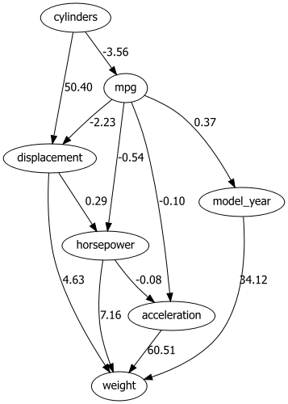

Modelling Continuous Datasets
Learning Bayesian Networks from continuous data is a challanging task. There are different manner on how to work with continuous and/or hybrid datasets. Each manner has their own advantages and disadvantages.
In bnlearn the following options are available to work with continuous datasets:
Discretize continuous datasets manually using domain knowledge.
Discretize continuous datasets using a probability density fitting.
Discretize continuous datasets using a principled Bayesian discretization method.
Model continuous and hybrid datasets in a semi-parametric approach that assumes a linear relationships.
LiNGAM-based Methods
Bnlearn includes LiNGAM-based methods which do the estimation of Linear, Non-Gaussian Acyclic Model from observed data. It assumes non-Gaussianity of the noise terms in the causal model. Various methods are developed and published for which Bnlearn includes two methods: ICA-based LiNGAM [1], DirectLiNGAM [2]. The following three are not included VAR-LiNGAM [3], RCD [4], and CAM-UV [5].
To demonstrate how the LiNGAM works, it is best to do it with a small toy example. Let’s create test data containing six variables.
The goal of this dataset is to demonstrate the contribution of different variables and their causal impact on other variables. All variables must be consistent, as in any other dataset. The sample size is set to n=1000 with a uniform distribution. If the number of samples is much smaller, say in the tens, the method becomes less reliable due to insufficient information to determine causality.
We will establish dependencies between variables and then allow the model to infer the original values.
Step 1:
x3is the root node and is initialized with a uniform distribution.Step 2:
x0andx2are created by multiplying with the values ofx3, making them dependent onx3.Step 3:
x5is created by multiplying with the values ofx0, making it dependent onx0.Step 4:
x1andx4are created by multiplying with the values ofx0, making them dependent onx0.
import numpy as np
import pandas as pd
from lingam.utils import make_dot
# Number of samples
n=1000
# step 1
x3 = np.random.uniform(size=n)
# step 2
x0 = 3.0*x3 + np.random.uniform(size=n)
x2 = 6.0*x3 + np.random.uniform(size=n)
# step 3
x5 = 4.0*x0 + np.random.uniform(size=n)
# step 4
x1 = 3.0*x0 + 2.0*x2 + np.random.uniform(size=n)
x4 = 8.0*x0 - 1.0*x2 + np.random.uniform(size=n)
df = pd.DataFrame(np.array([x0, x1, x2, x3, x4, x5]).T ,columns=['x0', 'x1', 'x2', 'x3', 'x4', 'x5'])
df.head()
m = np.array([[0.0, 0.0, 0.0, 3.0, 0.0, 0.0],
[3.0, 0.0, 2.0, 0.0, 0.0, 0.0],
[0.0, 0.0, 0.0, 6.0, 0.0, 0.0],
[0.0, 0.0, 0.0, 0.0, 0.0, 0.0],
[8.0, 0.0,-1.0, 0.0, 0.0, 0.0],
[4.0, 0.0, 0.0, 0.0, 0.0, 0.0]])
dot = make_dot(m)
dot
Structure learning can be applied with the direct-lingam method for fitting.
model = bn.structure_learning.fit(df, methodtype='direct-lingam')
# When we no look at the output, we can see that the dependency values are very well recovered for the various variables.
print(model['adjmat'])
# target x0 x1 x2 x3 x4 x5
# source
# x0 0.000000 2.987320 0.00000 0.0 8.057757 3.99624
# x1 0.000000 0.000000 0.00000 0.0 0.000000 0.00000
# x2 0.000000 2.010043 0.00000 0.0 -0.915306 0.00000
# x3 2.971198 0.000000 5.98564 0.0 -0.704964 0.00000
# x4 0.000000 0.000000 0.00000 0.0 0.000000 0.00000
# x5 0.000000 0.000000 0.00000 0.0 0.000000 0.00000
bn.plot(model)
# Compute edge strength with the chi_square test statistic
model = bn.independence_test(model, df, prune=False)
print(model['adjmat'])
# target x0 x1 x2 x3 x4 x5
# source
# x0 0.000000 2.987320 0.00000 0.0 8.057757 3.99624
# x1 0.000000 0.000000 0.00000 0.0 0.000000 0.00000
# x2 0.000000 2.010043 0.00000 0.0 -0.915306 0.00000
# x3 2.971198 0.000000 5.98564 0.0 -0.704964 0.00000
# x4 0.000000 0.000000 0.00000 0.0 0.000000 0.00000
# x5 0.000000 0.000000 0.00000 0.0 0.000000 0.00000
# Using the causal_order_ properties, we can see the causal ordering as a result of the causal discovery.
print(model['causal_order'])
# ['x3', 'x0', 'x5', 'x2', 'x1', 'x4']
# We can draw a causal graph by utility funciton.
bn.plot(model)
This example nicely demonstrates that we can capture the dependencies with the causal factors acurately.
Direct-LiNGAM method
The Direct-LiNGAM method ‘direct-lingam’ is a semi-parametric approach that assumes a linear relationship among observed variables while ensuring that the error terms follow a non-Gaussian distribution, with the constraint that the graph remains acyclic. This method involves repeated regression analysis and independence assessments using linear regression with least squares. In each regression, one variable serves as the dependent variable (outcome), while the other acts as the independent variable (predictor). This process is applied to each type of variable. When regression analysis is conducted in the correct causal order, the independent variables and error terms will exhibit independence. Conversely, if the regression is performed under an incorrect causal order, the independence of the explanatory variables and error terms is disrupted. By leveraging the dependency properties (where both residuals and explanatory variables share common error terms), it becomes possible to infer the causal order among the variables. Furthermore, for a given observed variable, any explanatory variable that remains independent of the residuals, regardless of the other variables considered, can be inferred as the first in the causal hierarchy.
Or in other words, the lingam-direct method allows you to model continuous and mixed datasets. A disadvantage is that causal discovery of structure learning is the end-point when uing this method. It is not possible to perform parameter learning and inferences.
# Import
import bnlearn as bn
# Load data set
df = bn.import_example(data='auto_mpg')
del df['origin']
# Structure learning
model = bn.structure_learning.fit(df, methodtype='direct-lingam', params_lingam = {'random_state': 2})
# Compute edge strength
model = bn.independence_test(model, df, prune=True)
# Plot
bn.plot(model)
# Plot with graphviz
dotgraph = bn.plot_graphviz(model)
dotgraph
dotgraph.view(filename=r'dotgraph_auto_mpg_lingam_direct')
Using the LINGAM method, the values on the edges describe the dependency using a multiplication factor of one variable to another. As an example, Origin -> -10 -> Displacement tells us Displacement has values that are factor -10 lower than origin.
|
 |

ICA-LiNGAM method
The ICA-LiNGAM method ‘ica-lingam’ is also from lingam and follows the same procedure.
# Import
import bnlearn as bn
# Load data set
df = bn.import_example(data='auto_mpg')
del df['origin']
# Structure learning
model = bn.structure_learning.fit(df, methodtype='ica-lingam')
# Compute edge strength
model = bn.independence_test(model, df, prune=True)
# Plot
bn.plot(model)
# Plot with graphviz
dotgraph = bn.plot_graphviz(model)
dotgraph
dotgraph.view(filename=r'dotgraph_auto_mpg_lingam_ica')
|

PC method
A different, but quite straightforward approach to build a DAG from data is identifing independencies in the data set using hypothesis tests and then construct DAG (pattern) according to identified independencies (Conditional) Independence Tests. Independencies in the data can be identified using chi2 conditional independence tests.
The Constraint-Based PC Algorithm (named after Peter and Clark, its inventors) is a popular method in causal inference and Bayesian network learning. It is a type of constraint-based algorithm, which uses conditional independence tests to build a causal graph from data. This algorithm is widely used to learn the structure of Bayesian networks and causal graphs by identifying relationships between variables.
DAG (pattern) construction
- With a method for independence testing at hand, we can construct a DAG from the data set in three steps:
Construct an undirected skeleton.
Orient compelled edges to obtain partially directed acyclid graph.
Extend DAG pattern to a DAG by conservatively orienting the remaining edges in some way.
# Import
import bnlearn as bn
# Load data set
df = bn.import_example(data='auto_mpg')
# Structure learning
model = bn.structure_learning.fit(df, methodtype='pc')
# Compute edge strength
model = bn.independence_test(model, df)
# Plot
bn.plot(model, edge_labels='pvalue')
# Plot with graphviz
dotgraph = bn.plot_graphviz(model, edge_labels='pvalue')
dotgraph
dotgraph.view(filename=r'dotgraph_auto_mpg_PC')
PC PDAG construction is only guaranteed to work under the assumption that the identified set of independencies is faithful, i.e. there exists a DAG that exactly corresponds to it. Spurious dependencies in the data set can cause the reported independencies to violate faithfulness. It can happen that the estimated PDAG does not have any faithful completions (i.e. edge orientations that do not introduce new v-structures). In that case a warning is issued.
|